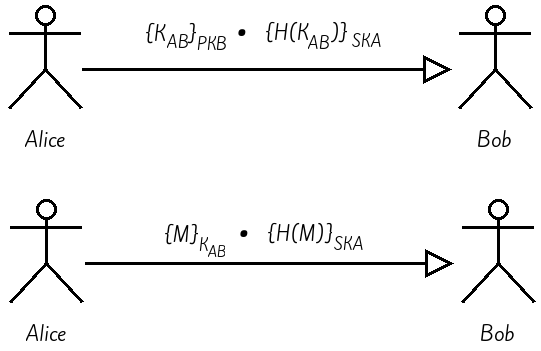

Work done by CHEBBAH Mehdi
Table of ContentsIntroductionImplementationPhase 1: Creation of key pairs1. Script for creating key pairsObtained results:Note:Phase 2: Session key exchange1. Session key generation and encryption scriptObtained results:Note:2. Decryption script and verification of non-repudiation and integrity of the session keyObtained results:Phase 3: Exchange of messages1. Messages encryption scriptObtained results:Note:2. Messages decryption script Obtained results:Note:
In this tutorial we will implement a hybrid secure exchange protocol that guarantees the following security services:
For this we will try to implement the system whose design has been previously established:

Concerning this part, we will divide it into 3 phases:
In this phase each of the two protagonists will create their own key pair a public key and a private key (PKi and SKi)
x
13# Ask the user to type the password4read -sp 'Entrez le mot de pass: ' mypass56# Generate a private key for RSA (skA.pem) then encrypt it using the DES algorithm and the password 'mypasswd'7openssl genrsa -out skA.pem -passout pass:$mypass -des 51289# Generation of the public key (pkA.pem) associated with the private key (skA.pem)10openssl rsa -in skA.pem -passin pass:$mypass -out pkA.pem -puboutskA.pem and pkA.pem in the current directory (of Alice)Re-execute the script in Bob's directory changing skA.pem and pkA.pem to skB.pem and pkB.pem respectively.
pkX.pem)In the opening of the session Alice will randomly generate a session key that will be communicated to Bob, this key will be encrypted using Bob's public key, the signature will be guaranteed in this transfer (this is the role of asymmetric encryption in this hybrid system)
xxxxxxxxxx13# Generation of a random key of 64 bytes then save it in the kAB file4openssl rand 16 > kAB56# Encrypting the kAB file with Bob's public key 7openssl rsautl -in kAB -out kAB.crypt -inkey pkB.pem -pubin -encrypt89# Hash the kAB key with MD5 and write the result in binary format.10openssl dgst -md5 -binary -out kAB.md5 kAB1112# Signature of the kAB hash by Alice's private key13openssl rsautl -in kAB.md5 -out kAB.md5.sign -sign -inkey skA.pem1415# Delete kAB.md5 (temporary file)16rm -f kAB.md5kAB file containing the session key.kAB.crypt file containing the kAB cryptogram.kAB.md5.sign file containing the session key's hash signature.The two files (kAB.crypt and kAB.md5.sign) will be sent to Bob and deleted from Alice's directory
xxxxxxxxxx13# Decryption of the received file kAB.crypt by the private key (skB.pem) 4openssl rsautl -decrypt -in kAB.crypt -out kAB -inkey skB.pem56# Hash of the kAB with MD5.7openssl dgst -md5 -binary -out kAB1.md5 kAB89# Verification of the signature of the received files using the public key of Alice 10openssl rsautl -in kAB.md5.sign -out kAB2.md5 -pubin -inkey pkA.pem1112# Comparison of the result of the received kAB Hash and the sent kAB Hash13var1=$(cat kAB1.md5)14var2=$(cat kAB2.md5)15if [ "$var1" == "$var2" ]16 then17 # Deleting temporary files18 rm -f kAB.crypt kAB1.md5 kAB.md5.sign kAB2.md519 echo "La cle a ete correctement transmis."20 # Display the message 'Press any key to exit' and wait for a character21 read -n 1 -s -r -p "Press any key to exit"22 exit 0 # Exit with success code23 else 24 # Deleting temporary files25 rm -f kAB.crypt kAB1.md5 kAB.md5.sign kAB2.md526 echo "Attention, la cle a ete modifie."27 # Display the message 'Press any key to exit' and wait for a character28 read -n 1 -s -r -p "Press any key to exit"29 exit 1 # Exit with failure code30fikAB file containing the session key sent by Alice After the establishment of the two previous phases it is now possible to send messages between Alice and Bob using symmetric encryption for confidentiality and private key encryption for signature
xxxxxxxxxx13# Encryption of the message (Message.txt) with the symmetric key (kAB)4openssl enc -des-cbc -in Message.txt -out Message.crypt -pass file:kAB56# Hash of the message (Message.txt) by the MD5 algorithm7openssl dgst -md5 -binary -out Message.md5 Message.txt89# Signature of the message hash with the private key of Alice10openssl rsautl -in Message.md5 -out Message.md5.sign -sign -inkey skA.pem1112# Deleting intermediate files13rm -f Message.md5Message.crypte containing the message encrypted with the session key kAB.Message.md5.sign containing the signature of the message hashThe two files (Message.crypt and Message.md5.sign) will be sent to Bob and then deleted from Alice's directory
xxxxxxxxxx13# Decryption of the received file Message.crypt by the kAB session key using the DES algorithm and the CBC strategy4openssl enc -in Message.crypt -out Message.txt -pass file:kAB -d -des-cbc56# Verification of the signature of the files received using Alice's public key7openssl rsautl -in Message.md5.sign -out Msg1.md5 -pubin -inkey pkA.pem89# Hash the message 10openssl dgst -md5 -binary -out Msg2.md5 Message.txt1112# Comparison of the result of the received kAB Hash and the sent kAB Hash13var1=$(cat Msg1.md5)14var2=$(cat Msg2.md5)15if [ "$var1" == "$var2" ]16 then17 # Deleting temporary files18 rm -f Message.crypt Msg1.md5 Message.md5.sign Msg2.md519 echo "Le message est transmi avec succe. Vous pouvez le consuler dans Message.txt"20 # Display the message 'Press any key to exit' and wait for a character21 read -n 1 -s -r -p "Press any key to exit"22 exit 0 # Exit with success code23 else 24 # Deleting temporary files25 rm -f Message.crypt Msg1.md5 Message.md5.sign Msg2.md526 echo "Echec du transmission du message (Le message a ete modiffier)."27 # Display the message 'Press any key to exit' and wait for a character28 read -n 1 -s -r -p "Press any key to exit"29 exit 1 # Exit with failure code30fiMessage.txt containing the message received from Alice.Message.txt') in case the transmission is correct (the received message is the same as the sent message). Or the display of a failure message ('Message transmission failed (The message has been modified).') in case the sent message and the received message are different.Bob can now read the message sent by Alice.